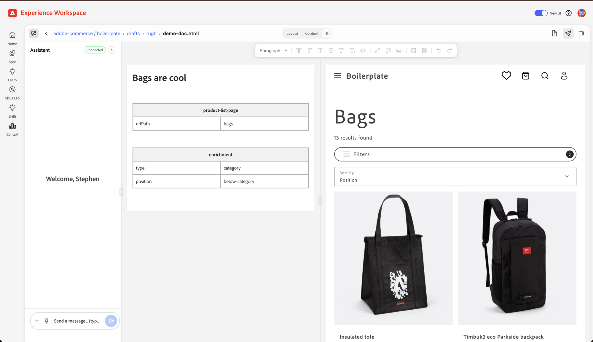

A tour of the EDS stack, the dropins ecosystem, and how they combine to ship fast, authorable commerce sites.
Stephen Rugh · rugh@adobe.com · 2026-05-04
Generated using AI with access to our documentation and code, and human-reviewed for accuracy.
What it is, how content moves from a doc to the edge, and the runtime model.
~10 min
Self-contained commerce UI components. The catalog, the architecture, the contract.
~10 min
The boilerplate-commerce reference: how blocks mount dropins into edge-served pages.
~15 min
A document-authored, edge-served, vanilla-JS web stack — built around Core Web Vitals, not around a framework.
aem.page / aem.live// in a Google Doc / DA — a 1-cell table: ┌──────────────────────────┐ │ Hero │ ├──────────────────────────┤ │ Welcome to our store │ │ [image: hero.jpg] │ └──────────────────────────┘
blocks/hero/ hero.js // export default decorate(block) hero.css // scoped to .hero
// blocks/hero/hero.js export default function decorate(block) { // `block` is a <div class="hero"> // already wrapped by the EDS runtime. // Mutate it however you like. const [picture, heading] = block.children; block.innerHTML = ''; block.append(picture, heading); }
Blocks are dynamically imported only on pages that use them. No bundle. No registry.
aem-boilerplate/ ├─ blocks/ │ ├─ header/ // header.js + header.css │ ├─ footer/ │ ├─ hero/ │ ├─ cards/ │ └─ fragment/ // reusable doc fragments ├─ scripts/ │ ├─ aem.js // EDS runtime library │ ├─ scripts.js // project lifecycle │ └─ delayed.js ├─ styles/ │ ├─ styles.css // eager │ ├─ lazy-styles.css │ └─ fonts.css ├─ head.html // goes into every page └─ no node_modules, no build/ ✶
A separate Adobe service. Not in the repo. Authoritative for everything site-level:
fstab.yaml)/sitemap.json, lists, search (replaces helix-query.yaml)Older EDS docs still reference YAML config files in the repo — those have been superseded.
Author drafts + unpublished content. Authors and reviewers iterate here. Not crawled.
Edge-cached, indexed, public. Only pages an author has explicitly promoted via Sidekick.
The suffix is a content signal. Code follows a separate path →
Browser extension. Opens a toolbar on any preview/publish page with: Edit · Preview · Publish · Unpublish. The author's deploy button.
Indexing rules live in the Configuration Service — what metadata to extract from each page (title, description, og:image, custom). Publish triggers re-index → /sitemap.json.
main is continuously synced and always live. Any other branch is reachable at <branch>--<site>--<org>.aem.page (or .aem.live) — handy for code review and feature previews.
2
Self-contained commerce UI components.
A self-contained, framework-agnostic commerce UI component, distributed as an npm package, that renders into DOM containers on a host page and talks to Adobe Commerce over GraphQL.
Owns its API calls, its data model, its UI, its events. Drop it in; it works.
Host page is plain HTML/JS. Internally Preact, but you never have to care.
Multiple dropins on one page. They share a global event bus, not a global state tree.
Product Detail Page — gallery, options, pricing, add-to-cart.
Cart, mini-cart, coupons, gift cards, shipping estimate.
Addresses, shipping methods, payment, order placement.
Sign-in, sign-up, password reset. Owns the customer token.
Customer dashboard — profile, orders, returns, addresses.
Order status, history, line items.
Adobe Commerce Payment Services UI — cards, wallets.
Sensei-driven product recommendations.
Saved-items list with toggles and counts.
Search, filtering, product browsing.
Audience targeting and personalized content.
B2B purchase orders and approval flows.
B2B quote requests, negotiation, approval.
B2B company profiles, roles, teams.
Multi-SKU quick reorder for B2B buyers.
Reusable B2B order lists.
@dropins/storefront-cart/ ├─ api.js // data layer │ ├─ initialize() │ ├─ setEndpoint(client) │ ├─ getCartData() │ └─ addProductsToCart(...) ├─ render.js // mount system │ └─ export const render = ... └─ containers/ ├─ CartSummaryList.js ├─ OrderSummary.js ├─ EstimateShipping.js ├─ Coupons.js └─ MiniCart.js
import { render as provider } from '@dropins/storefront-cart/render.js'; import CartSummaryList from '@dropins/storefront-cart/containers/CartSummaryList.js'; provider.render(CartSummaryList, { hideHeading: false, routeProduct: createProductLink, })(domElement);
Two-step call: first configure the container, then mount it into a DOM element. The host page creates the empty slot; the dropin fills it with UI.
// inside the cart dropin's api events.emit('cart/data', cartModel); // inside the mini-cart container events.on('cart/data', (data) => { setState(data); }, { eager: true }); // inside the host page (analytics) events.on('addProductsToCart', (e) => { window.adobeDataLayer.push({ event: 'addToCart', ...e, }); });
authenticated — user signed in/outcart/data — cart contents changedcart/initialized — cart finished bootstrappingpdp/data — product loadedcheckout/order/placedaem/lcp — page hit LCPeager: true replays the last emitted value — perfect for components that mount after data already arrived.
--color-brand-*, --spacing-*HTMLAttributesevents.on(...)build.mjs (add fields, skip fragments)Underneath, dropins are just a layer on top of EDS — they shoulder a lot of UI and integration work for you. You're always free to build the same functionality yourself with plain JS and HTML in a block.
@adobe-commerce/elsie — build & storybook@adobe-commerce/fetch-graphql — header injection, cache hints@adobe-commerce/event-bus — pub/sub across dropins@adobe-commerce/storefront-design — base tokens & CSSThe whole stack is designed so a content team without a frontend engineer can still ship.
// package.json { "dependencies": { "@dropins/storefront-pdp": "3.0.2", "@dropins/storefront-cart": "1.3.0", "@dropins/storefront-checkout": "...", "@dropins/tools": "..." } }
// copies node_modules → scripts/__dropins__/ node postinstall.js
head.html<script type="importmap"> { "imports": { "@dropins/storefront-pdp/": "/scripts/__dropins__/storefront-pdp/", "@dropins/storefront-cart/": "/scripts/__dropins__/storefront-cart/" ... } } </script>
Browser sees import { ... } from '@dropins/storefront-pdp/api.js' and rewrites it to a real path on the edge. No bundler. No webpack. No vite.
3
EDS blocks mounting dropins into edge-served pages.
scripts/scripts.js · scripts/aem.js · blocks/* — page lifecycle, decorate, three-phase loading
scripts/commerce.js — FetchGraphQL clients (CORE + CS), endpoint config, page-type detection, header injection
scripts/initializers/* · @dropins/storefront-* — mounted by EDS blocks, talks to Commerce via the config layer
Each layer below the EDS layer is a thin wrapper. aem-boilerplate-commerce = stock aem-boilerplate + these two layers.
aem-boilerplate-commerce addsaem-boilerplate-commerce/ ├─ blocks/ │ ├─ header/ // (stock) │ ├─ footer/ // (stock) │ ├─ commerce-cart/ · commerce-checkout/ │ ├─ commerce-mini-cart/ · commerce-login/ │ ├─ commerce-orders-list/ │ ├─ product-details/ · product-list-page/ │ └─ ... ├─ scripts/ │ ├─ aem.js // (stock) │ ├─ scripts.js // (stock-ish) │ ├─ commerce.js // orchestrator │ ├─ initializers/ // one file / dropin │ └─ __dropins__/ // built bundles ├─ head.html // + import map + preload ├─ postinstall.js // copies bundles └─ package.json // + 11 @dropins deps
postinstall.js copies node_modules/@dropins/* → scripts/__dropins__/scripts/commerce.js sets up GraphQL endpoints, headers, page detectionscripts/initializers/ one file per dropin — boots it once, hooks eventsblocks/commerce-* the bridge — each block mounts a dropin into EDS DOMhead.html gains an importmap + a stack of modulepreloadEverything else is recognizably stock EDS.
<!-- 1. Import map: bare specifiers → local paths on the edge --> <script nonce="aem" type="importmap"> { "imports": { "@dropins/storefront-account/": "/scripts/__dropins__/storefront-account/", "@dropins/storefront-auth/": "/scripts/__dropins__/storefront-auth/", "@dropins/storefront-cart/": "/scripts/__dropins__/storefront-cart/", "@dropins/storefront-checkout/": "/scripts/__dropins__/storefront-checkout/", "@dropins/storefront-pdp/": "/scripts/__dropins__/storefront-pdp/", /* + order, payment-services, recommendations, wishlist, personalization, product-discovery */ "@dropins/tools/": "/scripts/__dropins__/tools/" }} </script> <!-- 2. Three scripts in order: EDS runtime → EDS lifecycle → commerce orchestrator --> <script nonce="aem" src="/scripts/aem.js" type="module"></script> <script nonce="aem" src="/scripts/scripts.js" type="module"></script> <script nonce="aem" src="/scripts/commerce.js" type="module"></script> <!-- 3. modulepreload — warm the cache for what the runtime is about to need --> <link rel="modulepreload" href="/scripts/initializers/index.js"/> <link rel="modulepreload" href="/scripts/initializers/auth.js"/> <link rel="modulepreload" href="/scripts/__dropins__/tools/event-bus.js"/> <link rel="modulepreload" href="/scripts/__dropins__/tools/fetch-graphql.js"/> <link rel="modulepreload" href="/scripts/__dropins__/tools/preact.js"/>
// scripts/commerce.js export const CORE_FETCH_GRAPHQL = new FetchGraphQL(); export const CS_FETCH_GRAPHQL = new FetchGraphQL();
CORE = customer / cart / auth mutations. CS (Catalog Service) = product reads. Different endpoints, different headers, different caching.
export async function initializeCommerce() { // Initialize Config initializeConfig(await getConfigFromSession()); // Set Fetch GraphQL (Core) CORE_FETCH_GRAPHQL.setEndpoint(/* commerce_core_endpoint */); CORE_FETCH_GRAPHQL.setFetchGraphQlHeaders((prev) => ({ ...prev, ...getHeaders('all') })); // Set Fetch GraphQL (Catalog Service) CS_FETCH_GRAPHQL.setEndpoint(/* commerce_catalog_endpoint */); CS_FETCH_GRAPHQL.setFetchGraphQlHeaders((prev) => ({ ...prev, ...getHeaders('cs') })); return initializeDropins(); }
Called from loadEager() in scripts/scripts.js before any block decorates. Headers picked up from EDS's site-config service: store view, customer group, environment ID, API key.
// hooks: keep auth/group headers in sync events.on('auth/group-uid', setCustomerGroupHeader, { eager: true }); events.on('authenticated', setAuthHeaders, { eager: true }); events.on('cart/data', persistCartDataInSession, { eager: true }); // boot dropins await import('./auth.js'); // eager — token for everyone await import('./personalization.js'); import('./cart.js'); // lazy — fire & forget events.on('aem/lcp', async () => { await import('@dropins/tools/recaptcha.js').then(...); }); // re-init on speculative prerender → real navigation document.addEventListener('prerenderingchange', initializeDropins, { once: true });
import { initializers } from '@dropins/tools/initializer.js'; import { initialize, setEndpoint } from '@dropins/storefront-cart/api.js'; import { initializeDropin } from './index.js'; import { CORE_FETCH_GRAPHQL, fetchPlaceholders } from '../commerce.js'; await initializeDropin(async () => { setEndpoint(CORE_FETCH_GRAPHQL); const labels = await fetchPlaceholders('placeholders/cart.json'); return initializers.mountImmediately( initialize, { langDefinitions: { default: { ...labels } } }); })();
Pattern repeats for every dropin: set endpoint, fetch placeholders (i18n), mount.
| EDS block | Dropin | |
|---|---|---|
| blocks/product-details | → | @dropins/storefront-pdp |
| blocks/product-list-page | → | @dropins/storefront-product-discovery |
| blocks/commerce-cart | → | @dropins/storefront-cart |
| blocks/commerce-mini-cart | → | @dropins/storefront-cart (MiniCart) |
| blocks/commerce-checkout | → | @dropins/storefront-checkout |
| blocks/commerce-login · forgot-password · create-account | → | @dropins/storefront-auth |
| blocks/commerce-account-* · addresses · customer-information | → | @dropins/storefront-account |
| blocks/commerce-order-* · orders-list · returns-list | → | @dropins/storefront-order |
| blocks/commerce-wishlist | → | @dropins/storefront-wishlist |
| blocks/product-recommendations | → | @dropins/storefront-recommendations |
~30 commerce blocks ship with the boilerplate. Each is a thin wrapper — usually 50–200 lines.
// blocks/commerce-cart/commerce-cart.js // ── 1. DROPIN imports — render system + containers ────────────────────────── import { render as provider } from '@dropins/storefront-cart/render.js'; import CartSummaryList from '@dropins/storefront-cart/containers/CartSummaryList.js'; import OrderSummary from '@dropins/storefront-cart/containers/OrderSummary.js'; import EstimateShipping from '@dropins/storefront-cart/containers/EstimateShipping.js'; import Coupons from '@dropins/storefront-cart/containers/Coupons.js'; // ── 2. SIDE-EFFECT import: boots the cart dropin once if it isn't already ── import '../../scripts/initializers/cart.js'; // ── 3. EDS imports — block-config reader, link helpers ───────────────────── import { readBlockConfig } from '../../scripts/aem.js'; import { fetchPlaceholders, rootLink, getProductLink } from '../../scripts/commerce.js'; export default async function decorate(block) { // ── 4. Read the author's config from the block's table ────────────────── const { 'hide-heading': hideHeading = 'false', 'max-items': maxItems, 'enable-estimate-shipping': enableEstimateShipping = 'false', 'checkout-url': checkoutURL = '', } = readBlockConfig(block); // ── 5. Build the EDS-decorated DOM skeleton ───────────────────────────── const fragment = document.createRange().createContextualFragment(` <div class="cart__wrapper"> <div class="cart__list"></div> <div class="cart__order-summary"></div> </div>`); const $list = fragment.querySelector('.cart__list'); const $summary = fragment.querySelector('.cart__order-summary'); block.appendChild(fragment); // ── 6. Mount each dropin container into its EDS slot ──────────────────── await Promise.all([ provider.render(CartSummaryList, { hideHeading: hideHeading === 'true', maxItems })($list), provider.render(OrderSummary, { routeCheckout: () => checkoutURL })($summary), ]); }

Author toggles fields → block re-renders → published page reflects the change. No engineer in the loop.
// commerce.js · lines 156–167 function detectPageType() { if (document.body.querySelector('main .product-details')) return 'Product'; if (document.body.querySelector('main .product-list-page')) return 'Category'; if (document.body.querySelector('main .commerce-cart')) return 'Cart'; if (document.body.querySelector('main .commerce-checkout')) return 'Checkout'; return 'CMS'; }
No router. The DOM is the route — the block on the page tells the runtime what kind of page it is.
// commerce.js · lines 684–690 export function getProductSku() { if (isProductTemplate() && (IS_UE || IS_DA)) { return getDefaultSkuFromBlock(); // edit modes } return getMetadata('sku') // from page meta || getSkuFromUrl(); // from /products/...path }
For SEO + LCP, a sister service (aem-commerce-prerender) generates one static HTML page per SKU and pushes them to the edge. The runtime above is the same; the page is just already-rendered.
PDP, cart, checkout dropins are dynamic imports — they only load on pages that use them.
Edge-served, document-authored, vanilla-JS pages. No build. Perf budget is the product.
Composable commerce UI components. GraphQL-backed. Framework-agnostic at the boundary. Decoupled via an event bus.
EDS blocks decorate DOM and mount dropins into it. The boilerplate is two thin layers on top of stock EDS — config + initializers.
Stephen Rugh · rugh@adobe.com
EDS docs · aem.live Storefront docs · experienceleague.adobe.com Boilerplate · github.com/hlxsites/aem-boilerplate-commerce